Firefly
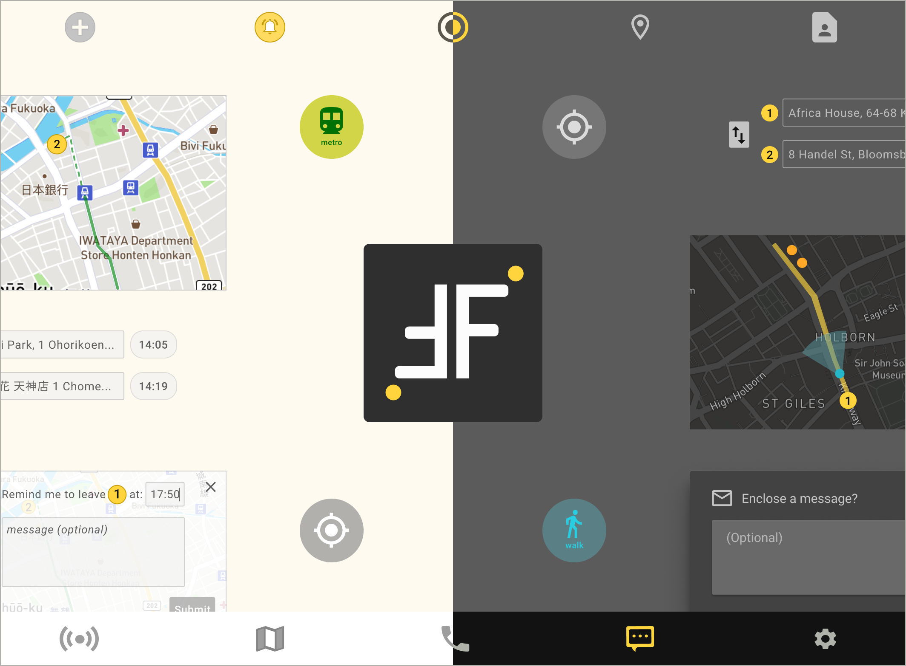 Dark prototype Light prototypeOverview
Imagine you are a student going home at 11pm from the library. You open a navigation app and it suggests that you rush to catch the last train or walk through an alley to take a bus. What would you do? This is not a mere hypothetical situation but a scenario faced by multiple female passengers daily. In fact, the design of a lot of navigation apps tend to prioritize efficiency and may not have considered the potential danger faced by the user when using the routes they suggested at night.
In a survey on personal safety, up to 50% of female (and 16% of male) expressed that they often feel unsafe when walking alone on the street or through an alley at night. Currently, there are apps that warn users of negative experiences at certain areas so that the user can avoid them. But there are not many apps that highlight where users can find a temporary "shelter" if they feel unsafe.
To fill this gap, I created Firefly. It is a mobile navigation app that highlights places which are stil in operation (e.g. restaurants, shops, and convenient stores). They can provide a bright and safe space for the user to rest, to make calls and to look for staff to help out if needed. Together with functions such as texting, sharing one’s GPS location, getting reminders on when to leave for commute on time, and having a light/dark mode switch, Firefly can help individual home-goers at night and solo travelers!
My roles |
Deliverables |
Methods/ Tools |
|
UX research |
|
|
|
UX/UI design |
|
|
|
Visual design |
|
|
|
Motion Design |
|
|
|
Market research |
|
|
Problems
Late-night home-goers
|
A |
“There was a time when I suspected that I was being followed at night. But since I was not familiar with that area, I didn’t know where to hide to call for help.” |
|
B |
“There were quite a few times that I looked up a route only to discover that I had missed the last bus/train and had to take other options (e.g. walk home at night/ take a taxi).” |
|---|---|
|
C |
“The map is only available in light mode. Reading it at night hurts my eyes.” |
Tourists/ Business travelers
|
D |
“I’m not familiar with the public transport schedule of the country I visit and I have to be constantly aware of the time as I can’t be late for the next meeting/ the place where I made reservations. This adds stress to the trip.” |
|---|
Solutions
-
Solution to A

A map that highlights places which are still open. These places are updated as you search.
-
Solution to B

Users can share one's live GPS location (together with an optional message) to people they trust.
-
Solution to C

Users can switch between light mode and dark mode.
-
Solution to D

Users can set notification reminders on when to leave in order to arrive at the destination on time.
User research
Survey
To understand the goals and frustrations faced by users of navigation apps, I created a survey with 2 parts.
Part 1: Information useful to the users
Late-night home-goers
What types of information are essential to you when traveling home at night?
Tourists/ Business travelers
Which navigation tools are helpful to you when traveling to a foreign city/country?
Implications
-
Users find: (1) public transport schedule, (2) virtual map, and (3) journey reminders/ notifications on the navigation app necessary.
-
Users also want to call or text people they trust to let them look into the user’s immediate situation.These functions can make the user feel safe and connected.
But this is only what people who are in a distance can do at best. If we should provide better support and assistance to the user, we need to look into the potential danger the user may face and the potential shelters the user can use in their immediate physical location.
Part 2: Strategies for ensuring a safe and efficient journey
Late-night home-goers
When you feel unsafe (e.g. think you might be followed), what would you do?
Why did you choose this method?

Tourists/ Business travelers
Which navigation tools are helpful to you when traveling to a foreign city/country?
Why did you choose this method?
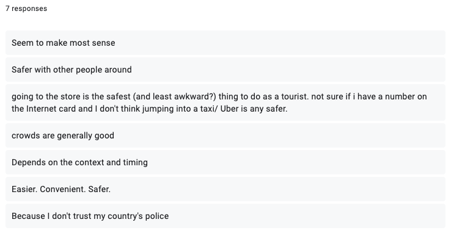Implications
-
For both groups, the go-to method to cope with danger is to find the nearest shop, restaurant, or convenient store and stay there. Another popular choice is to call or text people you trust or call the emergency number. The main reason is because busier places (e.g. stores, busier streets) are harder for stalker to locate/harm a target.
-
For tourists/ business travelers, the time zone of the place they visit and the time zone of their home countries might differ drastically. Since their family and friends are so far from them, popping into the nearest shop/ restaurants make the most sense.
Personas
Based on the demographic info of my respondents, I created 2 personas.
|
Hannah Lifestyle: She is a diligent research student. Most of her days, she works in the library until 10pm. Occasionally, she enjoys socializing with her friends at theatres and bars too. Frustrations:
Wishes:
“Having a reliable navigation app is crucial to commuting safely at night.” |

Ryan Lifestyle: He is a manager who overlooks businesses in other countries for the company. In his free time, he also enjoys solo traveling and learns about different cultures as a local. Frustrations:
Wishes:
“A navigation app can do more than just planning a journey. If developed well, it can work like a personal organizer or digital assistant.” |
User Stories
The goals and frustrations mentioned above can be summarised as follows:
Late-night home-goers
|
High |
I want to follow a safe route home where I can avoid alleys and quiet areas. |
|---|---|
|
High |
I want to be able to text and call people I trust when I feel unsafe. |
|
High |
I want to see on the map places which are still open at night so that I can stay there and make calls to people whom I trust. |
|
Medium |
I want to read the map in dark mode. |
Tourists/ Business travelers
|
High |
I want to know the convenient stores or restaurants that are still open at night. |
|---|---|
|
High |
Since I am not familiar with the public transport schedule of the foreign country, I want to know how much time I should reserve for traffic. |
|
High |
I want to get reminders on when I need to leave point A in order to arrive at point B on time especially when I have meetings at different locations on the same day. |
|
Medium |
I want to be able to switch between a light mode and a dark mode. |
Competitive Analysis
To understand how to position Firefly in the market, I looked at the strengths and the limitations of two popular navigation apps (“Citymapper” and “Google Maps”) and two personal safety apps (“Save & the City” and “Circle of 6”).
| 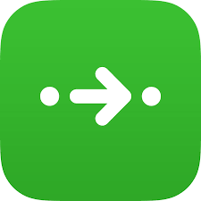 Citymapper |
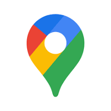 Google Maps |
Safe & the City |
Circle of 6 |
|
Can the user see reviews & warnings for different areas? |
 |
|
 |
|
Can it locate the user's GPS? |
|
|
|
|
Can the user send the GPS to others via the app? |
|
|
|
|
Can it show the public transport schedule by a particular departing time? |
|
|
|
|
Can it help the user plan a route? |
|
|
|
|
Can the user receive reminders on the journey? |
|
|
|
|
Can the map show places which are still open? |
|
|
|
|
Implications
Navigation apps tend to prioritize efficiency over safety. But for someone traveling at night, this is not always the best option.
Quite a number of personal safety apps aim to warn the user to avoid “dangerous” areas. While this function may enhance the user’s safety, it could also be misused to incite racial prejudice.
When the user is alone on the street at night, it is more helpful to point out places which can provide a temporary “shelter”.
As a result, the map of Firefly will highlight “safe places” which are still open on the map. These include convenient stores, shops and restaurants as they have staff and security cameras in operation. This can prevent stalkers from approaching the user and thus, can provide a safe space for the user to stay and make calls if needed.
Sketches & Wireframes
Sketches

Wireframes
Light mode:
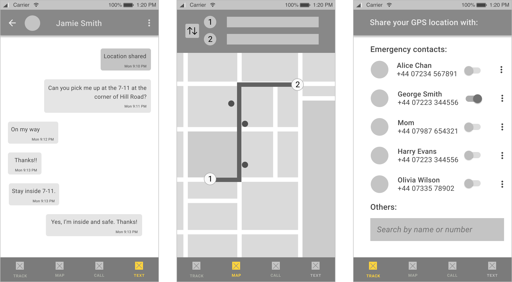Dark mode:
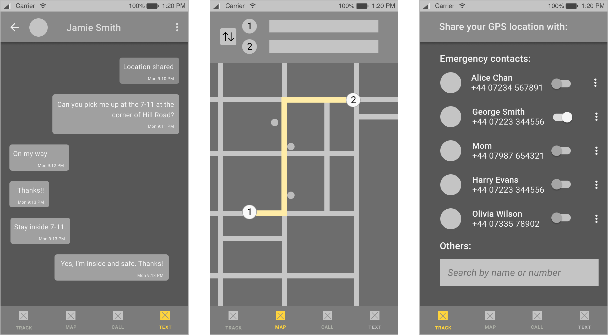User Testing of Wireframes
In the test, I asked participants to describe what they thought the pages were about and explained how to navigate to different pages.
What I've learned:
Planning a route V.S. Searching a location
What if the user just wants to look up the stores or restaurants nearby a hotel or a train station? Asking users to enter a starting point and a destination assumes they are planning a route. But it is not always the case. Sometimes, they just want to check the stores nearby a place.
|
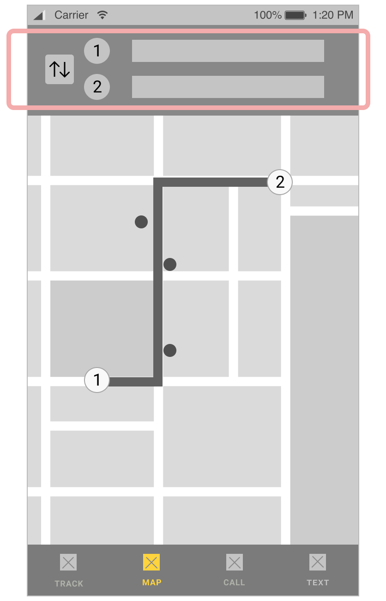
BEFORE |
|
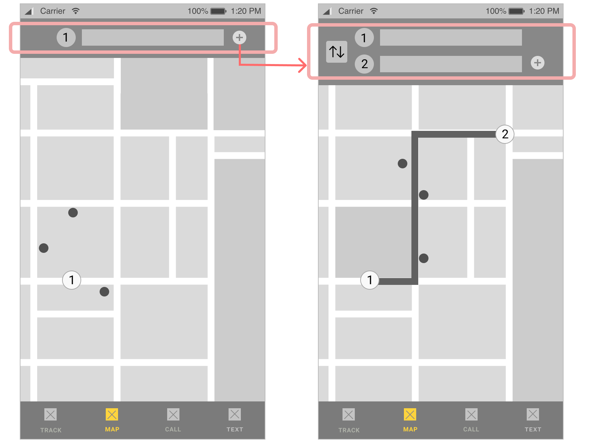
AFTER |
Revised version:The revised version allows users to look up a location before deciding to plan a route.
Mockups
Based on the revised wireframes, I created a mockup. Here are some of the pages:
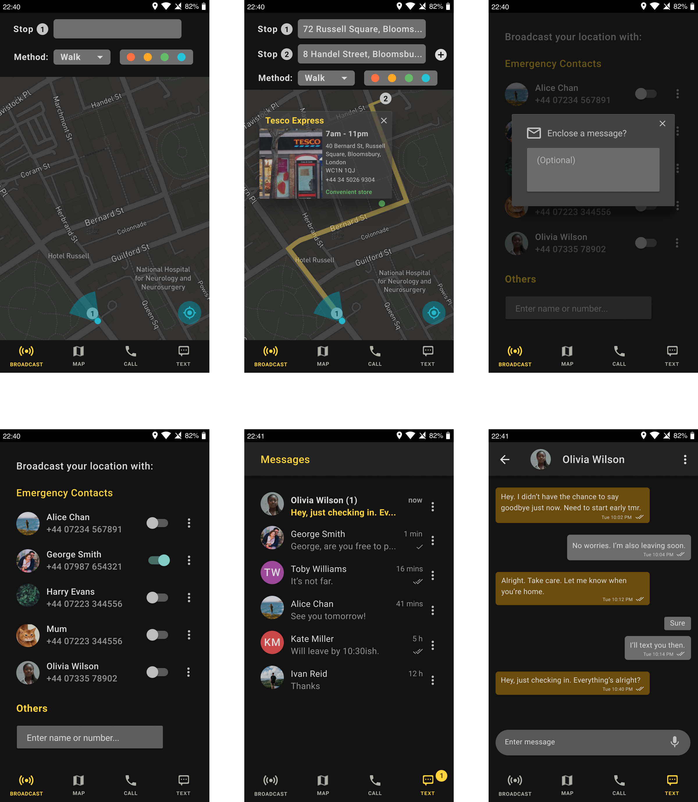User Testing of Mockups
What I've learned:
1. Minimize other items to maximize map coverage
Some users pointed out that there is too much information listed at the top navigation. The colored dots which are used for indicating different categories (e.g. shops, restaurants, convenient stores, etc.) require additional cognitive load from the user.
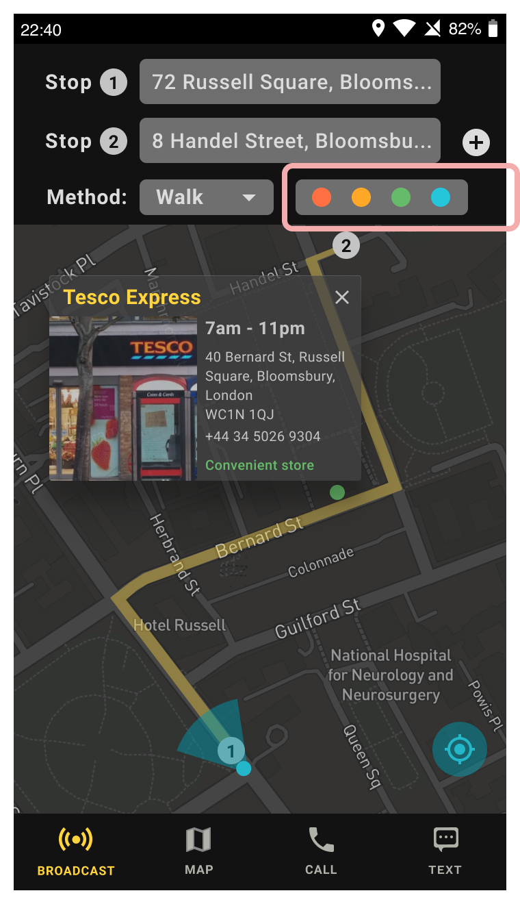Instead of showing all those information, users want to see more of the map.
|
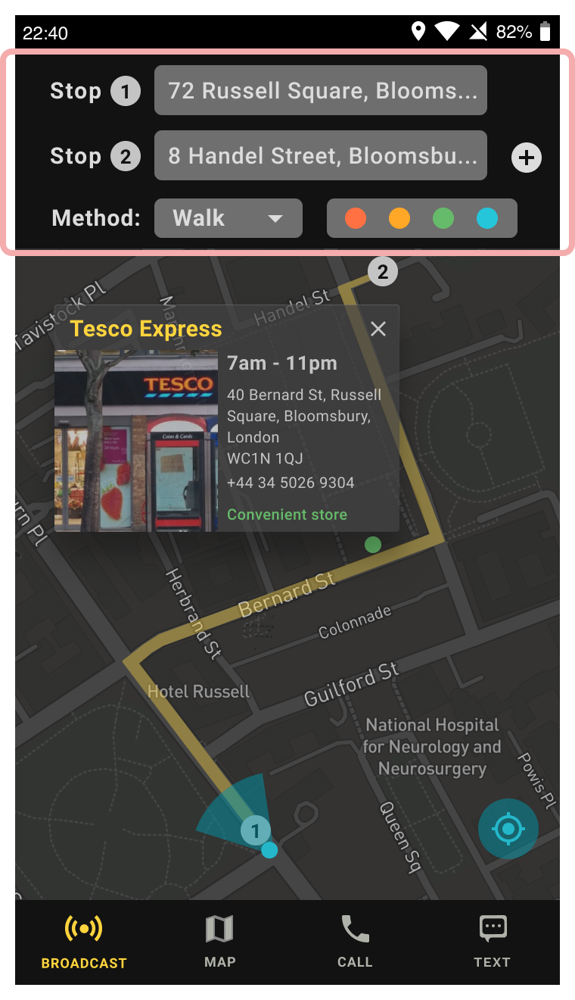
BEFORE |
|
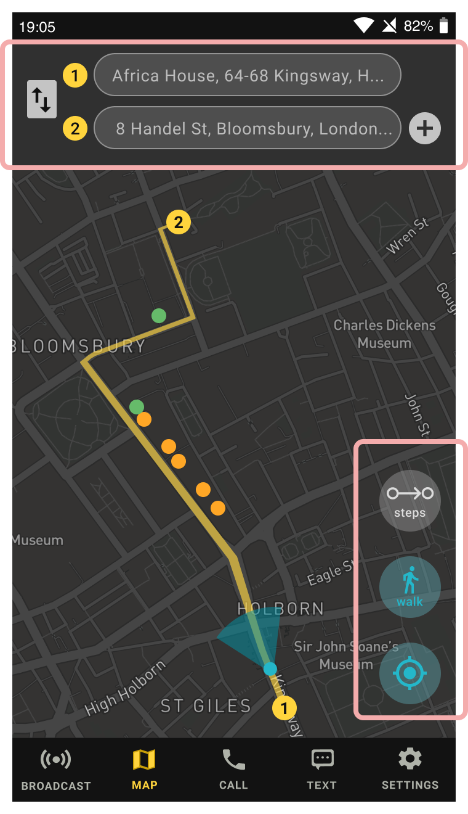
AFTER |
Revised version: I moved the method of transportation and the steps to the floating buttons on the map. They are semi-transparent so that it is not entirely covering the screen. At the same time, the top section is less cluttered and the map can now take up more space on the screen.
2. Color contrast in dark mode
At first, I used #121212 as the background color (except for the map page) as it is a recommended dark mode base color for Material Design. However, it blends in with the status bar and the bottom navigation.
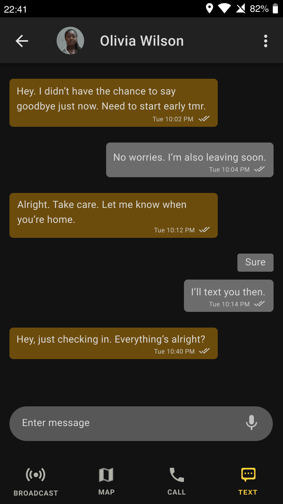Also, the strong color contrast between the background and the words can make reading the screen tiring.
|
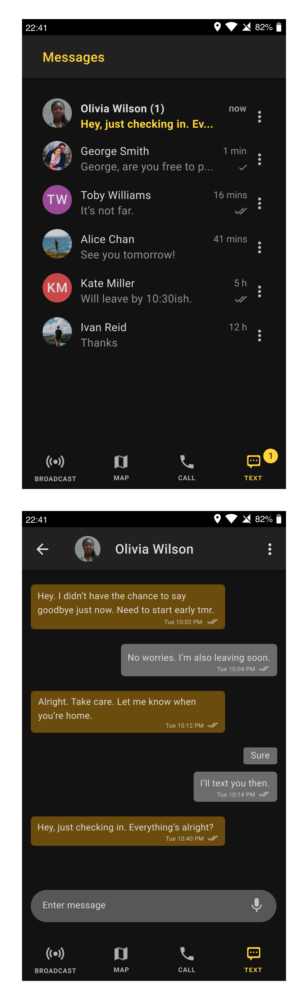
BEFORE |
|
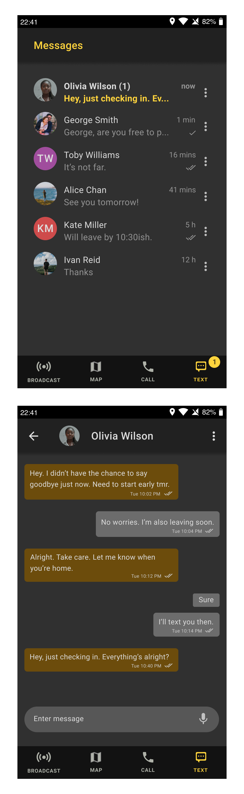
AFTER |
Revised version: I adjusted the background color to a slightly lighter shade (#303030) so that the status bar and the bottom navigation are now separated from the content. The color contrast is not as strong as the previous one but it is still easy to read in dark environment.
What surprised me:
Dark mode V.S. Light mode
Some users find the mockup insufficient to demonstrate how this app is especially helpful to tourists/ business travelers. Apart from its journey planning function, the app does not seem to respond to all the problems listed above.
Revised version: In addition to the dark mode, I created a light mode which depicts the scenario of a traveler using the app to get notification reminders on the departing time for his journey.
|
Dark mode: 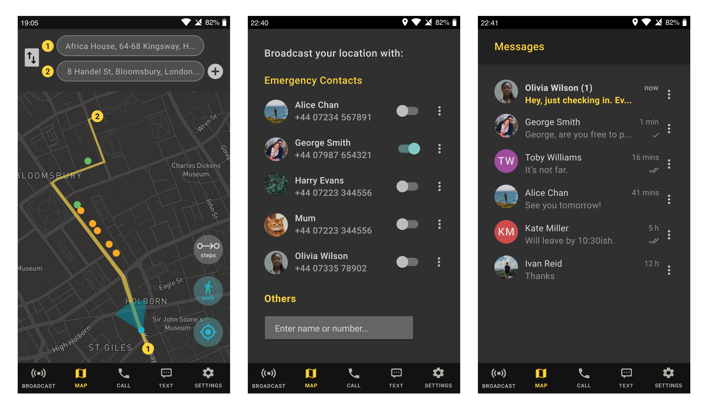 |
|
Light mode: 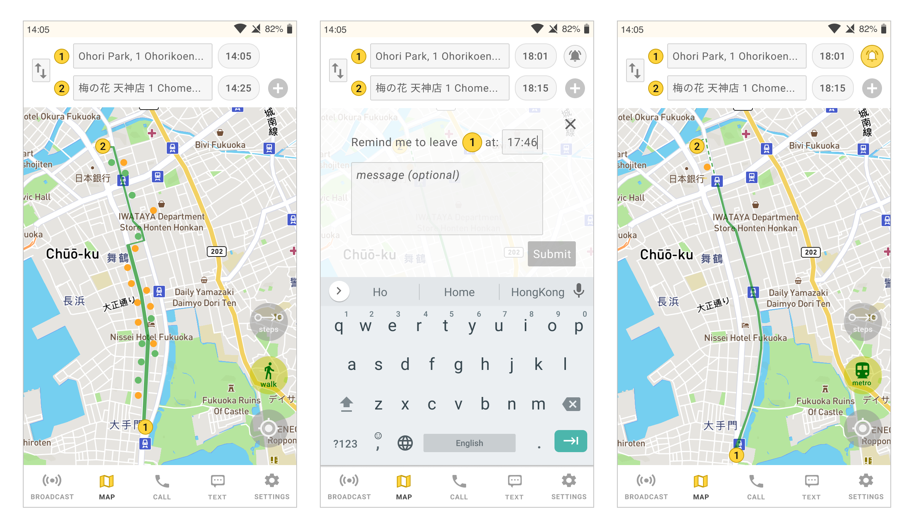 |
Branding
Name & Logo
This app is called “Firefly” because our map highlights places which are open using colored dots. When viewed in dark mode, these dots are like fireflies, or stars, in the dark :)
To illustrate this idea, I used two "F"s (which stand for "Firefly"), flipped one vertically and horizontally so that together, they look like roads on a map. The two dots resemble stores that are open.
Launch animation
|
To create dynamics for the logo, I created a launch animation: |
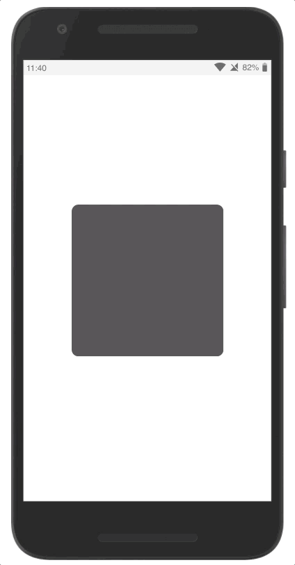 |
Colors
|
The colors I chose are primarily dark grey, yellow, and greyish white. These colors blend in well with both the dark mode and the light mode. |

|
Typography
|
For the brand type, I chose Raleway. The rounded nature of the type complements the dots and round buttons on the map. It is only used in the brand name. All other text are in Roboto as it is a standard Material Design font. When reading the screen in dark mode, it is best to have a font which is highly legible and familar. |
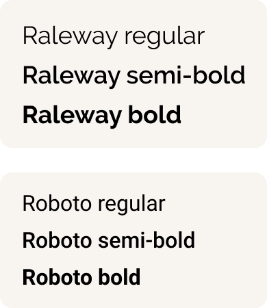 |
Interactive Prototype
User: Late-night home-goer
|
1. Switch to dark mode The user can switch to dark mode when using the map in dark environment. |
 |
|
2. Planning a route Places which are open (as shown in colored dots) are updated according to the route. |
|
|
3. Broadcasting one's live GPS location Users can share one's live GPS location (together with an optional message) to people they trust. |
|
|
4. Texting Users can send text messages and can quickly switch to sharing their location via the "Broadcast" button. |
 |
User: Tourists/ Business Travelers
|
1. Planning a route Places which are open (as shown in colored dots) are updated according to the method of travel and the time of the day. |
 |
|
2. Setting notification reminders Users can set notification reminders on when to leave in order to arrive at the destination on time. |
|
 |
|
3. Switch between mode Finally, users can switch to dark mode whenever they like. |
|
To learn more, click on the prototypes below:
Dark prototype Light prototypeReflection
As a person who enjoys traveling (and occasionally, solo traveling), I sometimes worried that it is unsafe to explore a city at night. In fact, such concerns also occur among late-night home-goers.
When facing danger at night, knowing where you can stay safely (even for just a while) is crucial. That's why I was eager to create an app that can solve these problems, and potentially, fill the gap in the current navigation app market. Together with notification reminders, this app is meant to help both solo travelers and late-night home-goers.
If I had time, I would combine "Call" and "Text" into a "Contact" button to save space for a "Record" button. In case the user is being followed, recording the situation (and streaming it people the user trust) may fear the stalker away. Visual evidence can also help identify the stalker.